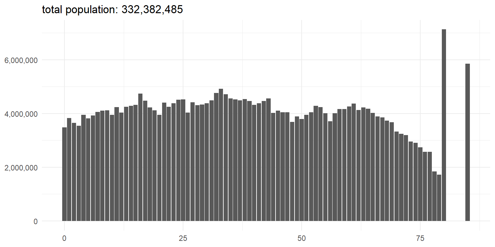

# Loads packages, global options, and plotting theme(s)
# (load_defaults.R should attach tidyverse, janitor, ggplot2, scales, etc.)
source("load_defaults.R")market
Overview
The country’s current age distribution represents the baseline demand for care by life stage. Understanding the shape of age profiles helps forecast shifts in service needs over time.
This analysis uses the ASEC dataset to construct a national age distribution. Due to privacy and sample-size constraints, we collapse the upper tail:
80 represents individuals aged 80–84
85 represents individuals aged 85+
Preliminaries
This chunk loads shared defaults (packages, themes, helper options) used throughout the project. It expects load_defaults.R to attach packages such as tidyverse, janitor, ggplot2, and scales that are used below.
Load and Prepare Current-Year ASEC Data
This section constructs a complete age index (single-year bins through 79, plus 80 for ages 80–84 and 85 for ages 85+), loads the most recent ASEC microdata snapshot, aggregates person weights to obtain population by age, ensures that all age bins are present (filling missing bins as zero), and writes a clean CSV used by the app.
Compile the Blank Age List
We create the set of age bins used in the analysis: 0–79 as single years, 80 (80–84), and 85 (85+).
# Age bins: 0..79 (single-year), 80 ≡ 80–84, 85 ≡ 85+
age_index <- tibble(age = c(0:79, 80, 85))Load ASEC data
We load the ASEC microdata, keep the latest survey year, and retain only the variables needed for weighting.
# Load latest ASEC microdata and keep only age and person weight
age_data <- read.csv("./data/CSV/ASECdata.csv") |>
filter(YEAR == max(YEAR)) |>
select(AGE, ASECWT) |>
clean_names() # -> age, asecwtCreate Population Estimates
We align ASEC ages to the analysis bins (collapse 81–84 → 80; 85+ → 85), then sum weights to obtain nationally representative population estimates by age.
# Collapse upper-tail ages to match published bins
# - 81–84 -> 80
# - 85+ -> 85
age_binned <- age_data |>
mutate(
age = case_when(
age >= 85 ~ 85L,
age >= 81 & age <= 84 ~ 80L,
TRUE ~ as.integer(age)
)
)
# Sum person weights to obtain population counts by age bin
age_pop <- age_binned |>
group_by(age) |>
summarise(population = sum(asecwt, na.rm = TRUE), .groups = "drop")
# Complete join so all bins (including empty ones) appear; fill missing with 0
age_modified <- age_index |>
full_join(age_pop, by = "age") |>
mutate(population = coalesce(population, 0)) |>
arrange(age)Write data
We export the processed age distribution for use in the application.
# Save processed data for the app
write.csv(age_modified, "./app_data/market.csv", row.names = FALSE)Data Check
The plot below shows the distribution of the estimations of age within our data. This distribution can be used to check that the results that were exported make sense and fit with a general understanding of the age distributions.
# Plot a simple age distribution from a data frame with columns `age` and `population`
plt_dist <- function(df) {
p <- ggplot() +
geom_col(
data = df,
aes(x = age, y = population)
) +
theme_minimal() +
theme(axis.title = element_blank()) +
scale_y_continuous(labels = scales::comma) +
ggtitle(label = paste(
"total population:",
scales::comma(sum(age_modified$population))
))
return(p)
}
# Render the plot
plt_dist(age_modified)
Market Data
age_disp <- age_modified |>
rename(Age = age, Population = population)
# Compute valid 0-based targets dynamically
targets_right <- seq_along(age_disp) - 1 # c(0, 1)
datatable(
age_disp,
rownames = FALSE,
filter = "top",
extensions = c("Buttons", "FixedHeader", "ColReorder", "Responsive"),
options = list(
pageLength = 25,
lengthMenu = c(10, 25, 50, 100),
dom = "Bfrtip",
buttons = list(
list(extend = "copy", title = "age_modified"),
list(extend = "csv", title = "age_modified"),
list(extend = "excel", title = "age_modified"),
list(extend = "print")
),
fixedHeader = TRUE,
colReorder = TRUE,
autoWidth = TRUE,
columnDefs = list(
list(className = "dt-right", targets = targets_right)
)
),
caption = htmltools::tags$caption(
style = "caption-side: top; text-align:left; font-weight:600; font-size:1.05em; margin-bottom:8px;",
"Population by Single Year of Age (interactive)"
)
) |>
formatRound("Age", digits = 0) |>
formatCurrency("Population", currency = "", interval = 3, mark = ",")Data Sources
Sarah Flood, Miriam King, Renae Rodgers, Steven Ruggles, J. Robert Warren, Daniel Backman, Annie Chen, Grace Cooper, Stephanie Richards, Megan Schouweiler, and Michael Westberry. IPUMS CPS: Version 12.0 [dataset]. Minneapolis, MN: IPUMS, 2024. https://doi.org/10.18128/D030.V12.0